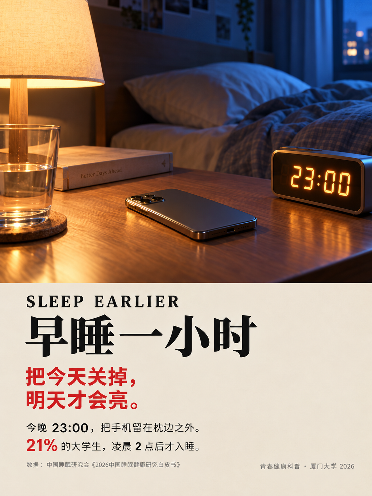

作品说明
海报以夜间卧室为主要场景：暖色台灯、冷色窗光、23:00 的电子钟、床边的手机和未合上的书，共同构成一个正在发生的睡前现场。
红色标题把「早睡」从一句建议变成一个明确的今晚动作；「23:00」给出行动时间，「21%」把个人选择放回大学生群体的睡眠现实里。画面、时间与比例一起，让这张海报更像一个可以马上执行的提醒。
海报文字
SLEEP EARLIER
早睡一小时
把今天关掉，明天才会亮。
今晚 23:00，把手机留在枕边之外。
21% 的大学生，凌晨 2 点后才入睡。
数据：中国睡眠研究会《2026中国睡眠健康研究白皮书》
青春健康科普 · 厦门大学 2026
海报内数据与文案按原图呈现，未作改动。